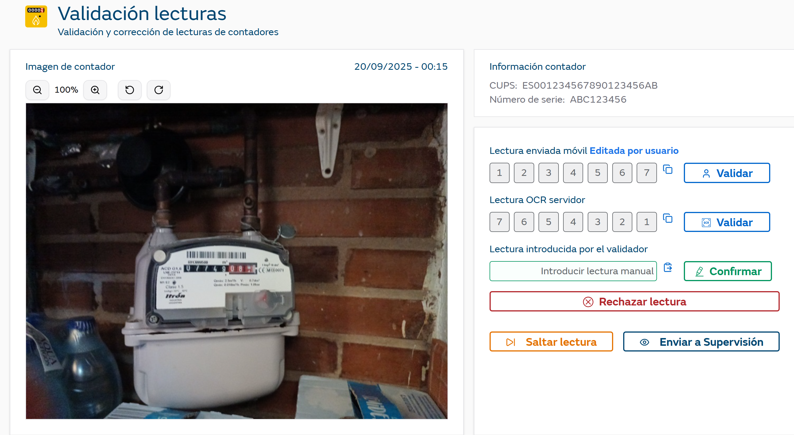

Una vez dentro del portal y accediendo a la opción de 'Validación de Lecturas' se muestra una de las lecturas que esté pendiente de validar.

En esta pantalla podrán visualizarse tanto las imágenes recibidas del móvil que han sido rechazadas, así como aquellas fotos que ya han pasado por el sistema alguna vez (bien manual o automáticamente) y al llegar a los sistemas Backend / Zeus, han sido rechazadas. En estas segundas se mostrará el error que el sistema ha devuelto, y se permitirá al usuario de la aplicación modificar la lectura. En caso que acabe modificando la lectura, se volvería a encolar para enviarse al sistema backend.
Para una lectura se muestra:
La imagen de la lectura realizada por el cliente.
CUPS identificador del punto de suministro
Número de serie del contador.
Lectura móvil: lectura reconocida por el OCR en el dispositivo
Lectura OCR Servidor: lectura reconocida por el OCR en el servidor.
Lectura manual aquella que introduce el usuario.
El botón de “Enviar a Supervisión” únicamente aparecerá a usuarios con perfil validador.
Se muestra la información de la lectura reconocida tanto en el dispositivo como en el servidor de OCR. Se permite al usuario de una forma rápida validar la lectura con el botón si es correcta y coincide con la imagen que se está visualizando a la izquierda.
También se muestra una opción de copiar el valor en el campo de lectura manual para facilitar su edición en caso necesario.
En caso que la lectura no sea identificable por el operario, puede rechazar la lectura sin tener que indicar la lectura reconocida con el botón de 'Rechazar Lectura'.
En caso que la lectura viniera dada por el usuario final, se mostrará como tal en el encabezado de la pantalla.
Una vez revisadas las lecturas y la imagen recibida, el usuario puede introducir manualmente la lectura que se tendrá en consideración y confirmarla.
Al usuario final se le indicará que la lectura ha sido validada correctamente.
El operario tendrá una opción adicional que consistirá en “Saltar para Supervisión”. En este caso, la foto no estará más disponible para los operarios y solamente la verán los usuarios con Rol Administrador. Cuando se les muestre a los usuarios administradores, se les destacará que son unas imágenes que han sido Saltadas para Supervisión.
Esta opción permite saltar una lectura y visualizar la siguiente pendiente de revisión.